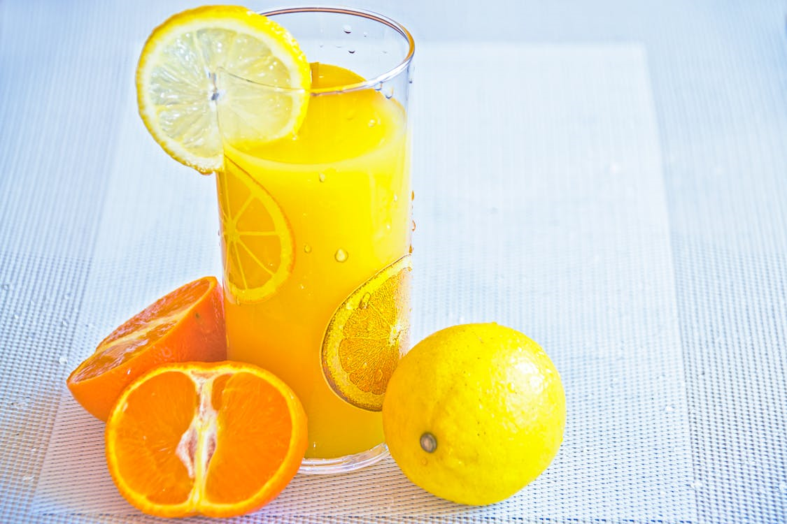
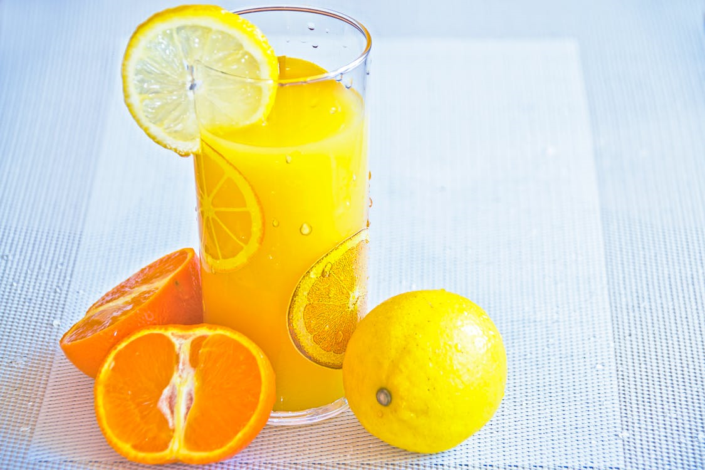
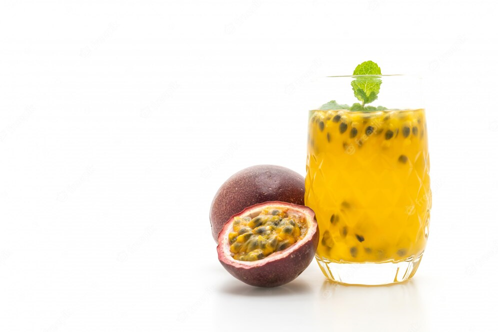
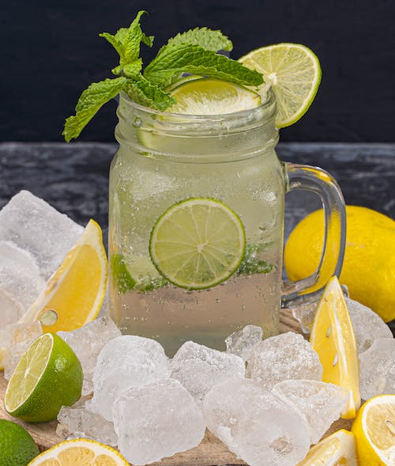
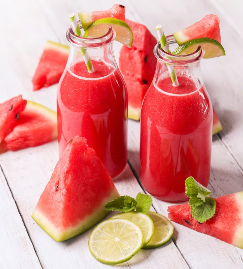

Orange
The orange is a usually round or oval citrus; its rind and flesh are generally orange.
It's consumed in fresh or in juice. The orange is also used to make stewed fruit, jams, etc.
The orange is a usually round or oval citrus; its rind and flesh are generally orange.
It's consumed in fresh or in juice. The orange is also used to make stewed fruit, jams, etc.
The passion fruit is a sweet, exotic fruit with a delicious, slightly tart flavour.
You may eat passion fruit juice, pulp, jam, and nectar straight. Or, add it to sauces, salads, baked goods, and yogurt.
The lemon is a bright yellow citrus fruit.
You can squeeze one into a glass of hot or cold water, add fresh lemon juice to salad dressings.
A watermelon is a large round fruit with green skin, pink flesh, and black seeds.
A versatile fruit, enjoyed fresh or in salads, smoothies, and sorbets, providing hydration and a burst of sweet flavor.